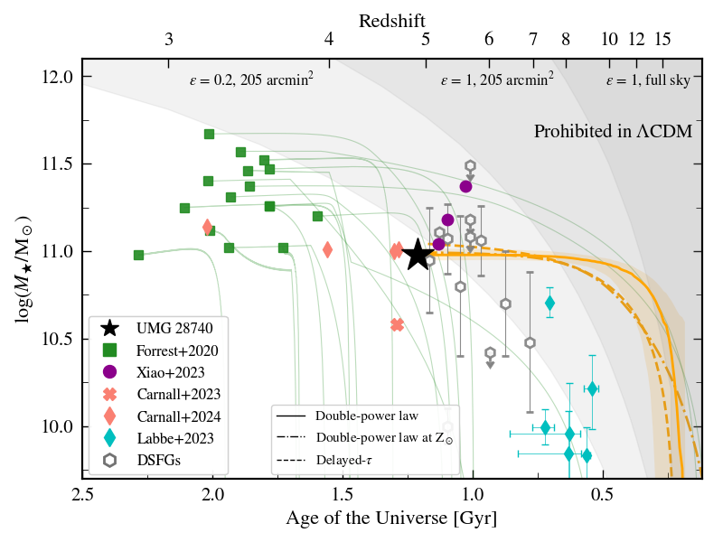
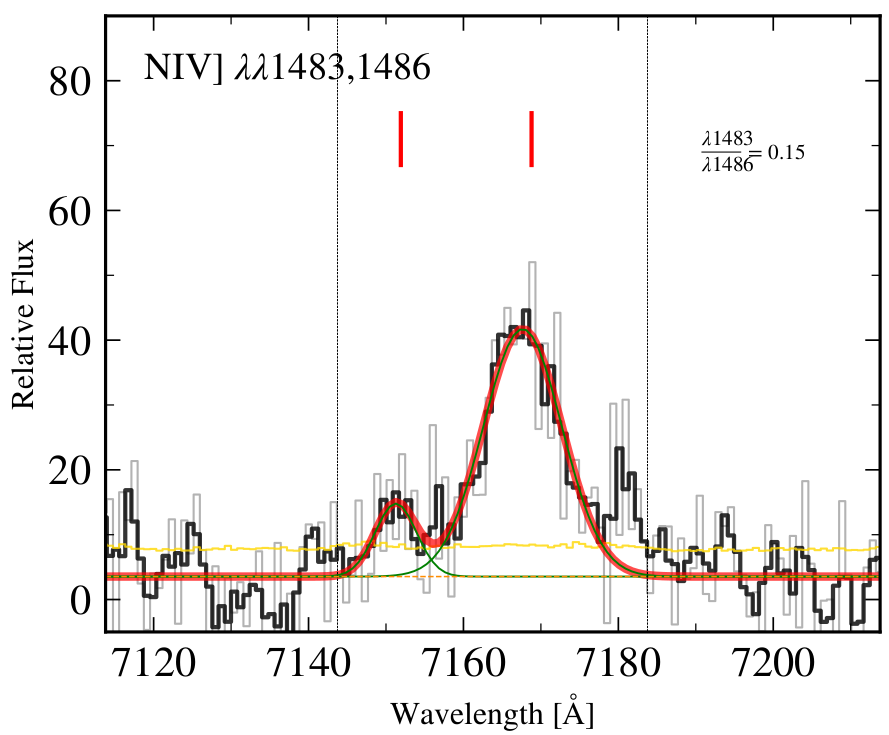

Searching for Monsters: Spectroscopic Survey of Ultra-Massive Galaxies at 4 < z < 5
A major outstanding question in galaxy evolution lies in the mechanisms behind the rapid formation and subsequent quenching of massive galaxies at early epochs. Recently, the Massive Ancient Galaxies At z > 3 NEar-infrared (MAGAZ3NE) survey spectroscopically confirmed the existence of rare ultra-massive galaxies (UMGs, M* > 1011 M⊙) from 3 < z < 4. These studies suggest that a significant fraction of UMGs experienced a period of bursty star-formation followed by rapid quenching between 4 < z < 5, motivating the need for spectroscopic confirmation and characterization of UMGs at this crucial epoch.
Using multi-band, wide-field imaging from the MAGAZ3NE collaboration in the XMM-VIDEO, COSMOS UltraVISTA, and the EGS fields, we identified a sample of UMGs with zphot > 4. We observed each of the UMG candidates for a minimum of ~4 hours with Keck/LRIS or Keck/DEIMOS over a broad wavelength range to cover any potential Lyman-alpha emission, Lyman-break, or other ISM features.
Spectroscopic Confirmation of a Ultra-Massive Galaxy in a z ~ 4.9 Protocluster

We present the first observations of an extremely massive (M* > 1010.98 M⊙ UMG in the EGS at z = 4.8947. This galaxy lies in one of the most extreme overdensities in the EGS from 3 < z < 6, and is the most massive member. Our initial SED analysis suggest that this galaxy is likely a post-starburt, with more spectrscopic follow up to confirm its quiescence (see de Graaff et al. 2024).
An Ultra-Massive Nitrogen Emitter at z ~ 3.8

We observe an extremely massive (M* > 1011.27 M⊙ UMG in XMM z = 3.822. Through Keck/LRIS and Keck/MOSFIRE observations, we are able to dissect the evolutionary history of this object. This galaxy is rare nitrogen-emitter, with strong NIV] emission lines. We find that this galaxy has not only the presence of an AGN, but also evidence for extreme star-formation. This work is ongoing, with a publication expected late 2024 (Urbano Stawinski et al. in preparation).